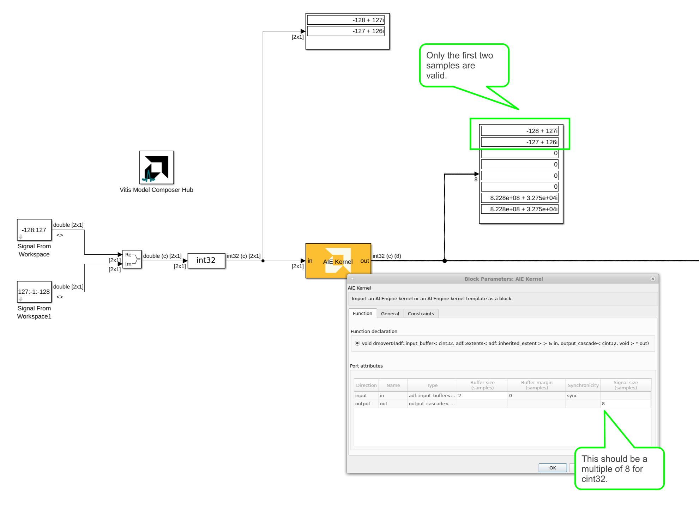

Monitoring Cascade Signals in an AI Engine Design
In a Versal-AIE device, data from one AI Engine can be forwarded to another by using cascade streams. Each cascade stream is 384 bits wide for AIE devices or 512 bits wide for AIE-ML devices.
In Vitis Model Composer, you can import a kernel with cascade input and output ports using the AIE Kenel block and easily monitor the cascade signal for debugging purposes.
The kernel code below takes in an input buffer of 2 cint32 samples and produces a cascade signal of 2 cint32 values. This is a total of 128 bits and as such it does not use the entire cascade bitwidth.
#include "k_cascade_cint32.h"
#include "aie_api/aie.hpp"
#include "aie_api/aie_adf.hpp"
const uint8_t LANE = 2;
void dmover0(adf::input_buffer<cint32,adf::extents<adf::inherited_extent>>& in,
output_cascade<cint32>* out)
{
auto inIter=aie::begin_vector<LANE>(in);
aie::vector<cint32, LANE> value;
value = *inIter++;
writeincr(out,value );
}
The screen shot below depicts the kernel above imported as an AI Engine block for an AIE-ML device.

Note that even though the kernel only processes 2 cint32 samples (128 bits) per clock cycle, the output cascade signal size must be set to 8 cint32 samples (512 bits). This is because the AIE Kernel requires the signal size to be set to a multiple of 8 for cint32 data.
In such a case, when monitoring the cascade signal, only some of the samples will be valid - for a design with N data lanes, the first N samples of the cascade signal will be valid. However, the consuming kernel should take in all the samples to produce an output.